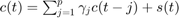
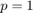
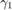
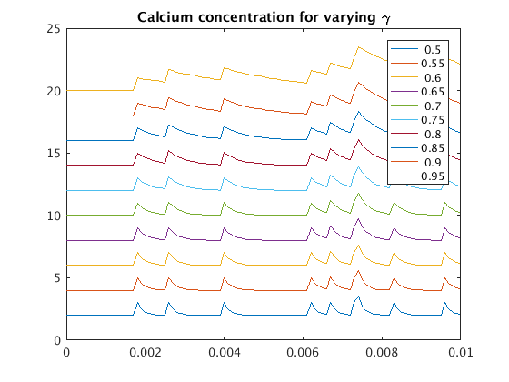
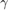
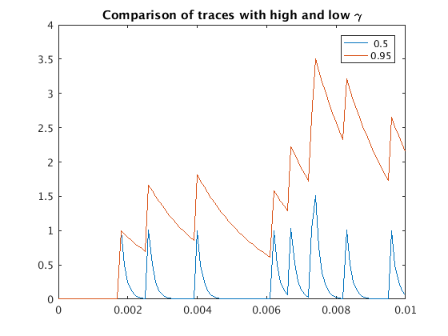

Autoregressive Model for Calcium Dynamics
Explain what an autoregressive model is and how this applies
Contents
Generate spikes from exponential distribution
rate = 1000; % spike rate (Hz) dur = .01; % duration of trial (s) dt = 0.0001; % time step (s) T = (0:dt:dur); spikes = zeros(dur/dt+1,1); % Generating spikes from a exponential distribution for t=1:length(T) if (rate*dt)>=rand spikes(t) = 1; end end
Applying the AR model to Action Potentials
Before implementing the calculation, consider what each of the parameters in the model does. Look again at the AR model.

Consider the following for : * What does the parameter  represent? * How do changes to affect the calcium signal? * What are reasonable values for this parameter?
Look at what happens when we vary :
p = 1; Gamma = (.5:.05:.99); calcium = zeros(length(spikes),numel(Gamma)); for g = 1:numel(Gamma) gamma = Gamma(g); for t = 2:length(spikes) calcium(t,g) = gamma(p)*calcium(t-p,g)+spikes(t); end figure(1); plot((0:dt:dur),calcium(:,g)+2*g); hold on end title('Calcium concentration for varying \gamma') hold off; legend(num2str(Gamma'))
Can you tell what's happening? What if we overlay the plots of the calcium signal with the highest and lowest values of .
figure(2); plot((0:dt:dur),calcium(:,[1,g]))
legend(num2str(Gamma([1,g])'))
title('Comparison of traces with high and low \gamma')
 Let's do one more comparison: are the peaks in the same place?
[~,peaklocs] = arrayfun(@(i) findpeaks(calcium(:,i),[1;g]),... 'uniformoutput',false); disp(cat(2,peaklocs{:}))
Error using arrayfun All of the input arguments must be of the same size and shape. Previous inputs had size 13 in dimension 2. Input #3 has size 1 Error in ARmodel (line 53) [~,peaklocs] = arrayfun(@(i) findpeaks(calcium(:,i),[1;g]),...